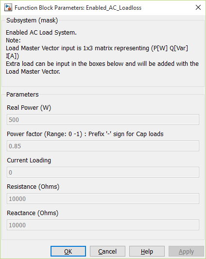

AC Loads
Description
The AC electrical loads are classified into constant power, constant current and constant impedance loads, for different user requirements. These loads are also modeled in the dq0 reference frame. The loads are modeled as lumped quantities. Assuming a balanced three-phase system, the zero axis electrical quantities are generally zero valued in steady state and therefore ignored.
Mathematical Model
Although the loads are divided as power, current and impedance loads, the generators require the dq0 axis currents drawn by each load, as feedback signals. In general, the complex power S can be expressed as

where V and I* are the voltage and complex conjugate of the current drawn.
For the power loads, the active (P) and reactive components (Q) of the complex power can be expressed as

From the above equation, after separating the real and imaginary parts , the active and reactive currents can be given as


For the impedance loads, the active and reactive currents can be given as


The dq currents drawn by the loads are computed using (5.3.23) and (5.3.24) and are passed as feedback signals to the corresponding generator bus.
AC Loads Mask

Fig. 5.57. Mask input for the load model
The following load parameters can be entered in the dialog box.
1. Real Power [P] (Units –Watt)
2. Power factor (Range: 0-1)
3. Load efficiency (Range: 0-1)
4. Resistance [R] (Units – Ohm)
5. Reactance [X] (Units – Ohm)
The resistance and reactance values of the load cannot be simultaneously ‘0’, as this would result in a short circuit. They will default to the high impedance values shown in Fig. 5.57, when zero values are entered for both resistance and reactance.
Component Inputs and Outputs
AC loads can be inserted in two modes: Internal and External. Loads configured through both these are combined together inside the AC load block as shown in the block below.

The external load vector is configured as a vector of [Active power, Reactive Power, Current]. In the current Boeing system model, this vector is supplied through the ‘Source blocks’ from the ECS and FOS systems. It is important to note that heavy loading of the system before the generator voltage has built to a stable output can result in instabilities, eventually leading to system crashing down. So ‘ENABLE’ signal has been added to the loads, as shown in Fig. 5.56 to ensure a time delay after which the generators can be loaded.